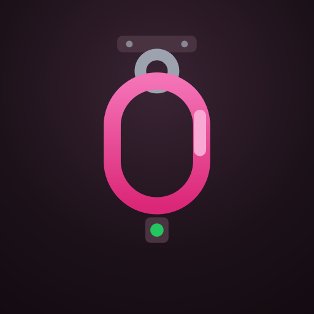
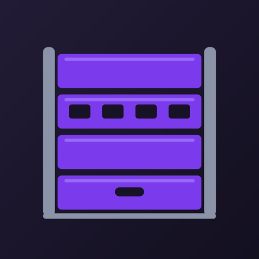
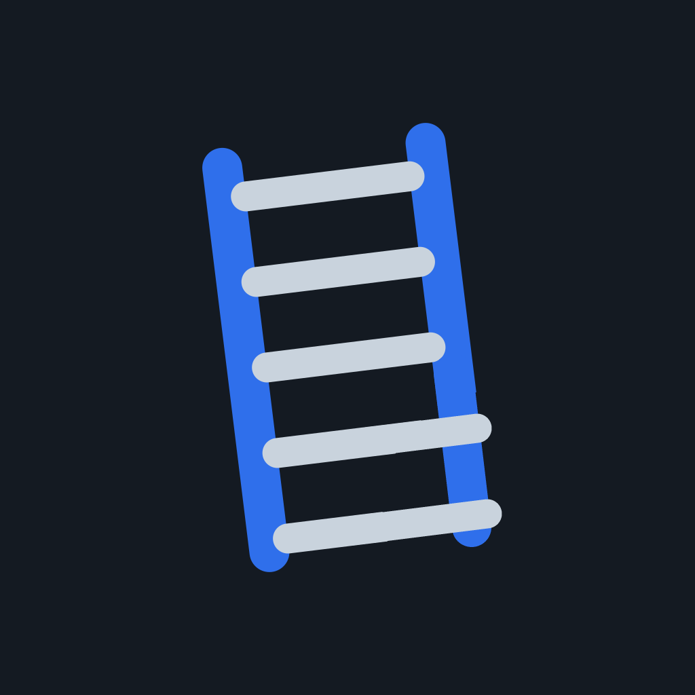
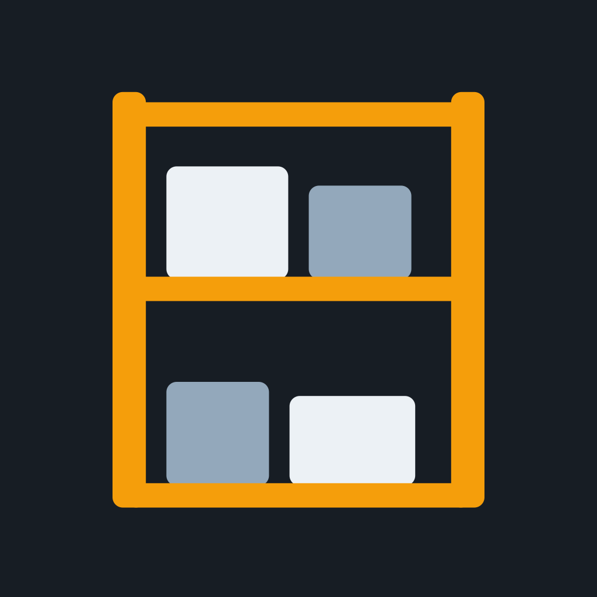
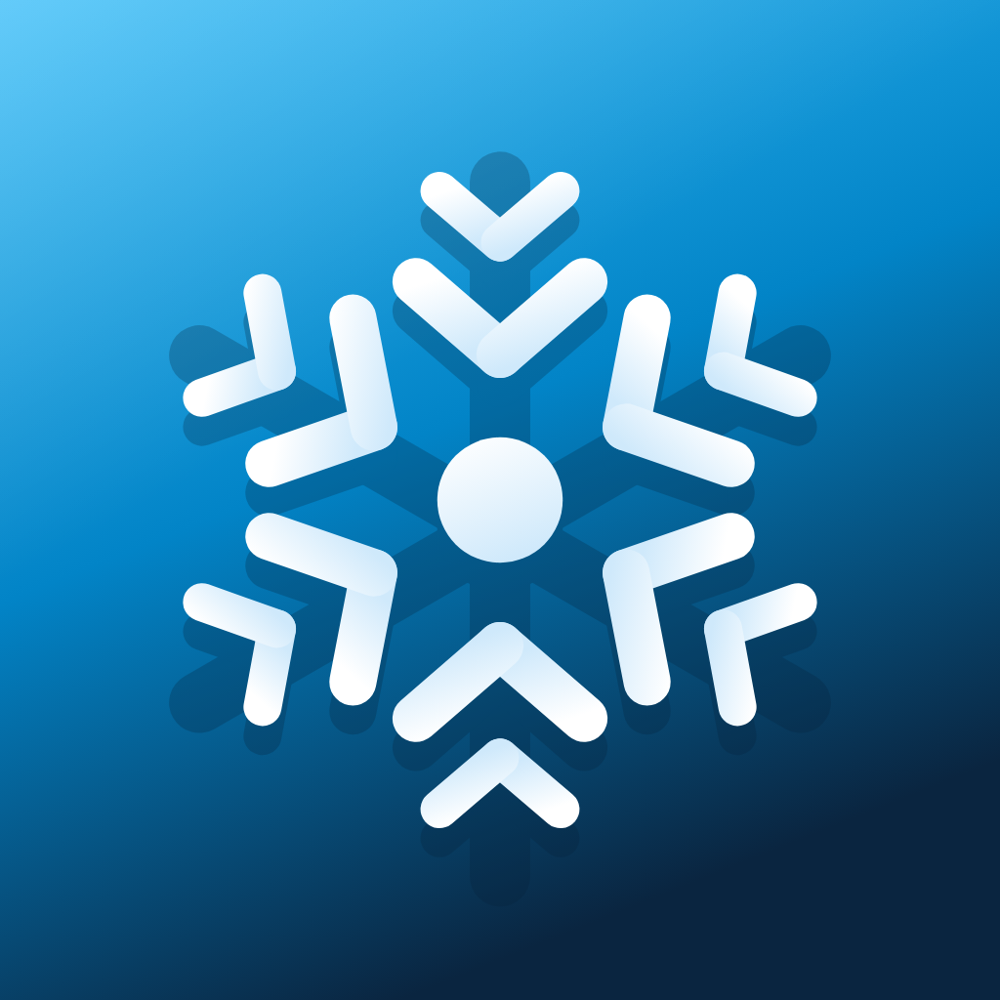
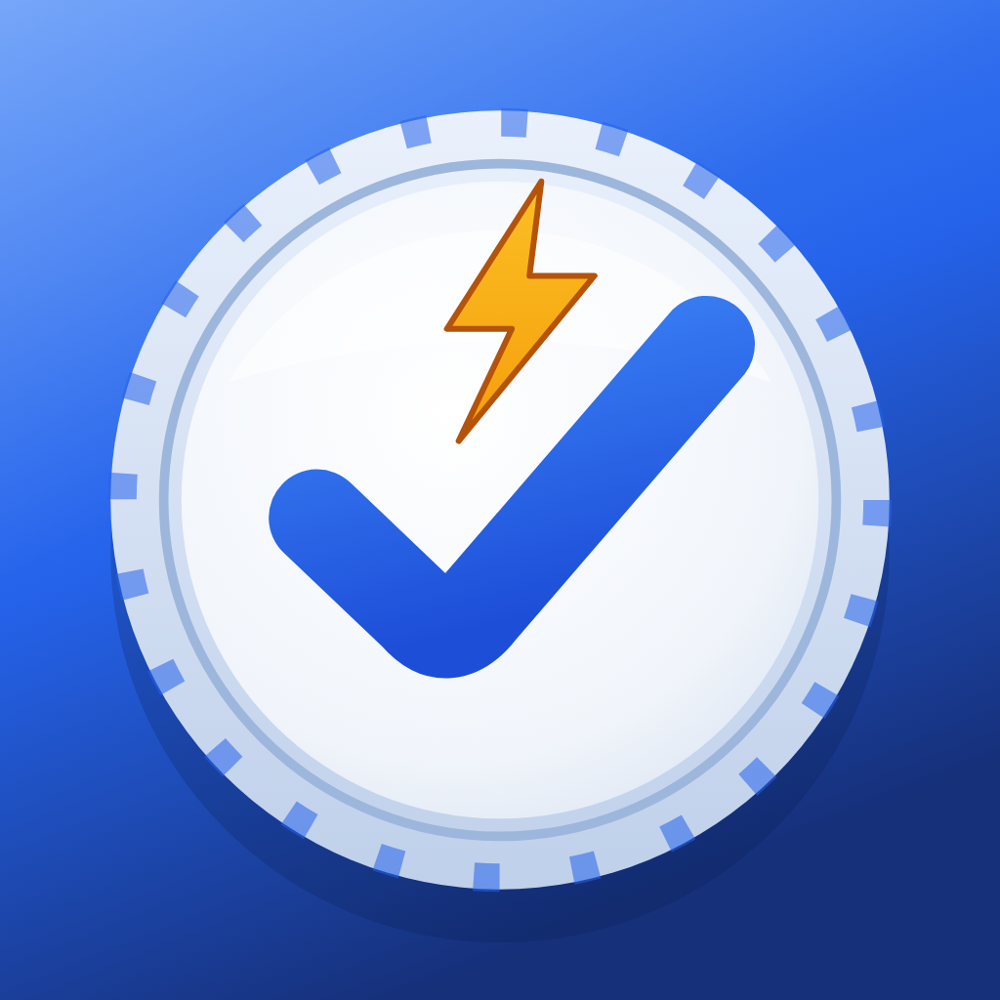

Sportgeräte. Geprüft. Dokumentiert. Rechtssicher.
Tore, Reck, Barren, Sprossenwand, Deckenanlagen, Matten — jedes Gerät muss mindestens einmal im Jahr von einer sachkundigen Person geprüft werden (DGUV-Information 202-044, DIN EN 913 ff.). TurnDex führt dein Geräte-Inventar je Sporthalle, denkt an die Kippsicherung und macht jede Prüfung zum PDF-Prüfbericht mit GPS-Stempel und Fotos — gerichtsfest dokumentiert.
Sporthallen sind Pflicht-Terrain — mit klaren Regeln
Wo täglich Kinder turnen und Vereine trainieren, trägt der Betreiber die Verkehrssicherungspflicht (§ 823 BGB). Zusammen mit DGUV Vorschrift 1 und der DGUV-Information 202-044 „Sportstätten und Sportgeräte" heißt das: regelmäßige Sicht- und Funktionskontrolle durch Lehrkraft oder Übungsleitung — und mindestens einmal im Jahr eine Prüfung durch eine sachkundige Person nach den Gerätenormen DIN EN 913 ff.
Der Ernstfall ist real: Umstürzende Tore haben in Deutschland mehrfach Kinder das Leben gekostet — deshalb gilt: Tore niemals unballastiert, Kippsicherung bei jeder Kontrolle prüfen. Erkennbar beschädigte Geräte sind sofort zu sperren, bis eine Fachkraft sie freigibt.
Passiert etwas, fragen Unfallkasse, Versicherung und Gericht als Erstes nach dem Prüfnachweis genau dieses Geräts. Ohne Doku je Gerät steht der Träger blank da.
- Vor der Benutzung: Sicht- & Funktionskontrolle durch Lehrkraft/Übungsleitung.
- Mind. 1× im Jahr: Prüfung durch eine sachkundige Person (DGUV-I 202-044, DIN EN 913).
- Tore: Kippsicherung prüfen — niemals unballastiert aufstellen (EN 748).
- Bei Schäden: Gerät sofort sperren — Benutzung untersagen, kennzeichnen, sichern.
- Dokumentationspflicht: Nachweis je Gerät — Bestand, Prüfungen, Mängel, Instandsetzung.
Deine Beweiskette für jedes Sportgerät
Vom Fußballtor bis zur Basketball-Deckenanlage — TurnDex dokumentiert jedes Gerät einzeln, unveränderlich und teilbar.
Geräte-Inventar mit EN-Kategorien
Jedes Gerät einzeln erfasst — Kategorie mit Norm (Tor EN 748, Reck EN 12197, Barren EN 914, Matte EN 12503 …), Hersteller, Inventar-Nummer, Baujahr, Referenzfoto. Je Sporthalle, Gymnastikraum oder Außenanlage.
Geführte Checklisten-Prüfung
12 Prüfpunkte nach DGUV-I 202-044 — Standsicherheit & Kippsicherung, Rahmen, Holzteile, Polsterung, Fangstellen, Verstellmechanik, Seile & Netze, Deckenbefestigung, Matten u. v. m. Schritt für Schritt, nichts wird vergessen.
Mängel im Ampelverfahren
beobachten, instand setzen, Gerät sperren — Benutzung untersagen. Jeder Mangel wird eingestuft, fotografiert und rechtssicher festgehalten.
PDF-Prüfbericht
Ein Tipp erzeugt den Prüfbericht je Sportstätte oder Zeitraum — mit GPS-Stempel, Beweisfotos und in Pro mit deinem eigenen Logo. Fertig für Schulträger, Unfallkasse oder Vereinsvorstand.
Team unter einem Träger
Die Leitung lädt per Code ein — Hausmeister, Übungsleitung und Prüfdienst dokumentieren gemeinsam unter einem Betrieb. Jede Prüfung zeigt, wer sie durchgeführt hat.
Append-only-Beweiskette
Prüfungen können nie bearbeitet oder gelöscht werden — Storno nur gekennzeichnet und mit Begründung. Genau diese Unveränderlichkeit überzeugt vor Gericht.
So funktioniert's
Sporthalle, Gymnastikraum oder Außenanlage anlegen und darunter jedes Gerät mit Kategorie, Inventar-Nummer und Baujahr erfassen. Die Jahresfrist läuft ab sofort mit.
Gerät wählen, die 12-Punkte-Checkliste durchgehen, Mängel per Ampel einstufen, Foto dazu — GPS- und Zeitstempel ergänzt TurnDex automatisch. Auch „alles in Ordnung" ist ein Nachweis.
Prüfbericht als PDF an Schulträger, Unfallkasse, Vereinsvorstand oder Auftraggeber — oder im Streitfall an den Anwalt.
Preise
Free
- Bis 5 Sportgeräte
- Alle Kernfunktionen
- Checkliste, Ampel, GPS, Fotos
- PDF-Prüfbericht
- Cloud-Sync auf allen Geräten
Pro Empfohlen
- Unbegrenzt Sportgeräte
- PDF-Branding mit eigenem Logo
- Team: Mitarbeiter einladen
- Prüf-Erinnerung
- Prioritäts-Support
Alle 16 Dexware-Apps. Ein Abo.
TurnDex ist eine von 16 Dexware-Apps. Die Suite kostet so viel wie unsere teuerste Einzel-App — und schaltet alle Dexware-Apps auf allen deinen Geräten frei. Neue Apps kommen automatisch dazu, ohne Aufpreis.






- Alle 16 Apps inklusive — von Sportgeräte-Prüfung bis Winterdienst
- Alle zukünftigen Dexware-Apps automatisch dabei
- Einmal kaufen — in jeder App freigeschaltet
- Jederzeit kündbar
Erhältlich direkt in jeder Dexware-App: einfach in der App auf „Pro werden" tippen und die Dexware Suite wählen.
Mehr zur Dexware Suite →💻 Fürs Web gibt's einen Haupteinstieg: dashboard.dexware.app — die Übersicht aller App-Dashboards. Dort erscheint auch das TurnDex-Dashboard: Sportstätten, Prüfungen, Mängel und Prüfberichte im Browser.
Entdecke die ganze Dexware
TurnDex ist Teil der Dexware-Familie — Pflicht-Dokumentation, die einfach funktioniert. Du prüfst auch Spielplätze? Dann ist SpielDex dein perfekter Begleiter.